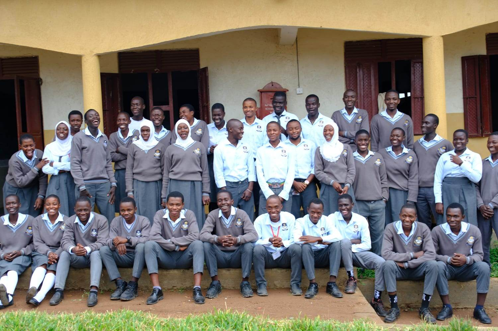
Uganda
P4T (Planning for Tomorrow)
Education programmes, teacher support, feeding, learning resources and vocational skills training in Kyangwali.
View Project
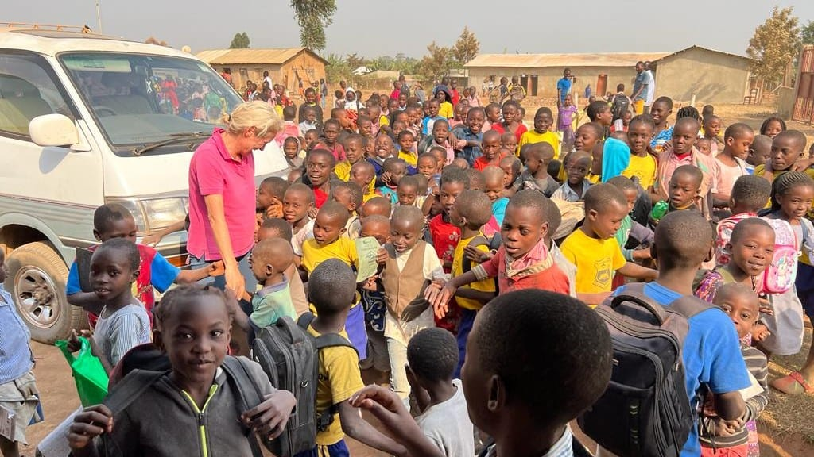
Funding and partnership support for grassroots organisations working across education, integration, livelihoods, sport and community development.
Programme overview
Our Grants programme brings together the foundation’s organisational partnerships and funded community work.
Support is shaped around education, integration and community development, livelihoods and personal development, including sport. Projects are targeted to support community-led initiatives which might otherwise struggle to find resources yet are capable of enormous impact. Details of earlier partnership projects are also included here as part of the foundation’s continuing record of impact.
Current partnerships
Our ongoing work with current community-group partnerships.

Uganda
Education programmes, teacher support, feeding, learning resources and vocational skills training in Kyangwali.
View Project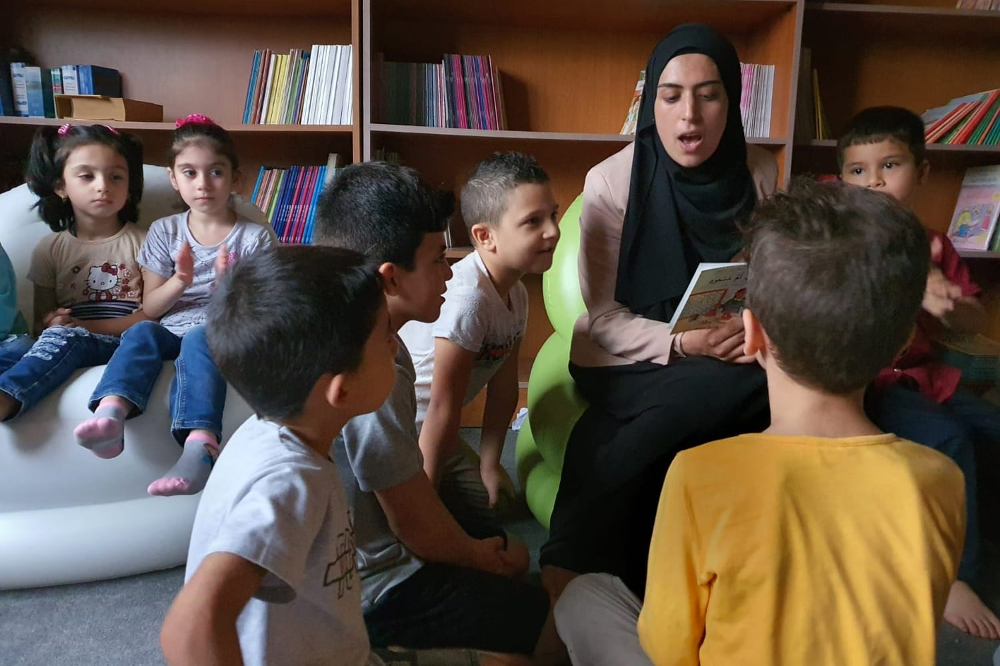
Lebanon
Education from kindergarten to Grade 12, alongside learning spaces, solar power and staff development.
View Project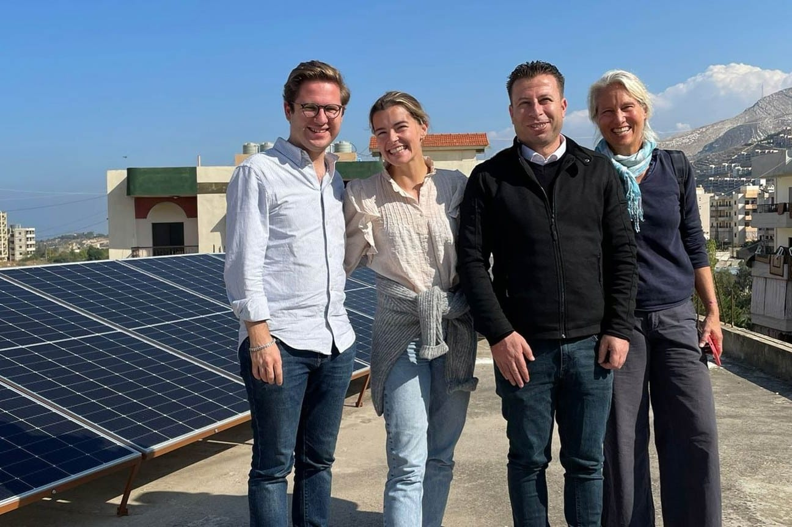
Transnational
Operational seed funding for an organisation supplying solar power to schools and hospitals in crisis-affected regions.
View Project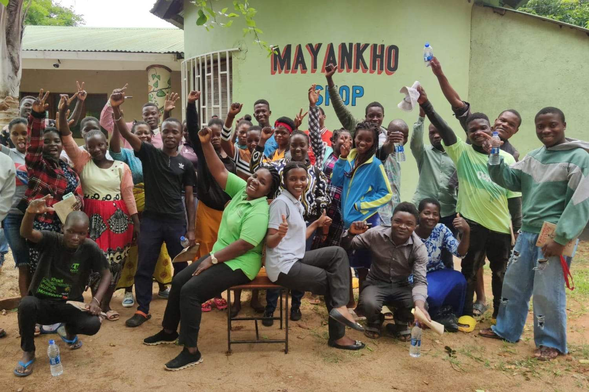
Malawi
Entrepreneurship, skills and lending support designed with rural communities in Southern Malawi.
View Project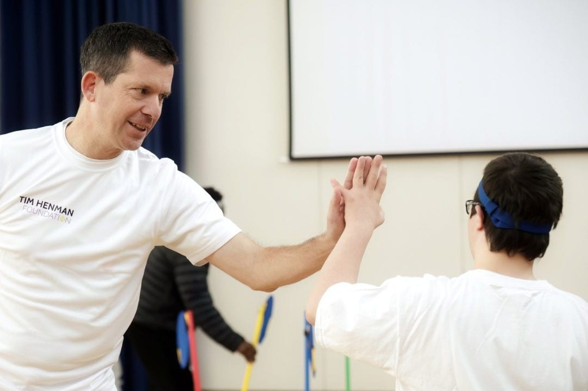
UK
Current support through the Tim Henman Foundation builds on previous support through Performance Plus.
View Project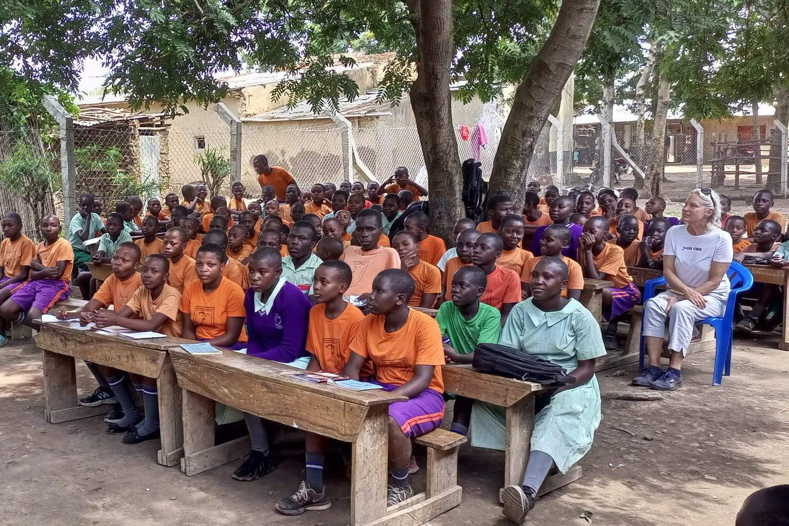
Uganda
A refugee-led school connecting education, daily meals and practical agricultural learning in Kyangwali.
View ProjectPrevious partnerships
Our earlier and completed partnership projects.
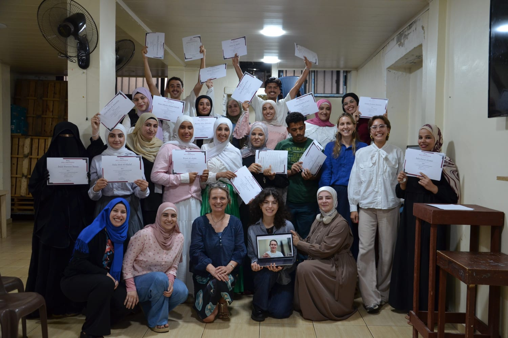
Lebanon
Professional and academic development for highly motivated young Syrian refugees in Shatila Camp.
View Project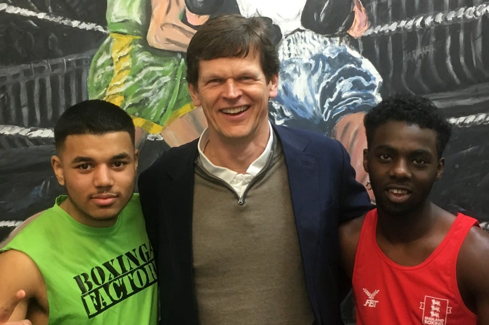
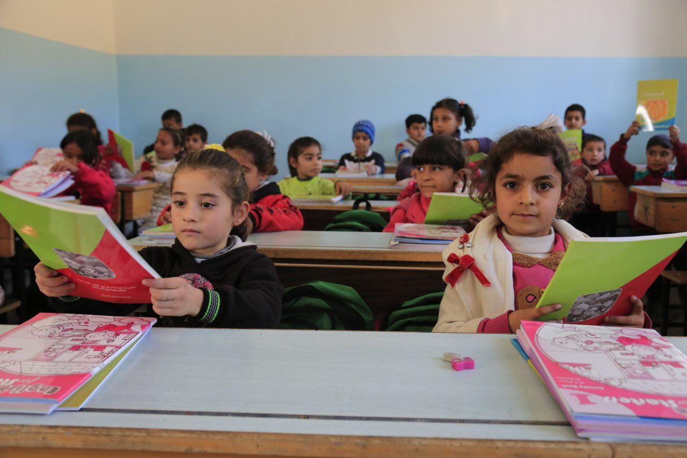
Syria
Restoration, reopening and support for a school in rural Aleppo before its transition to local management.
View Project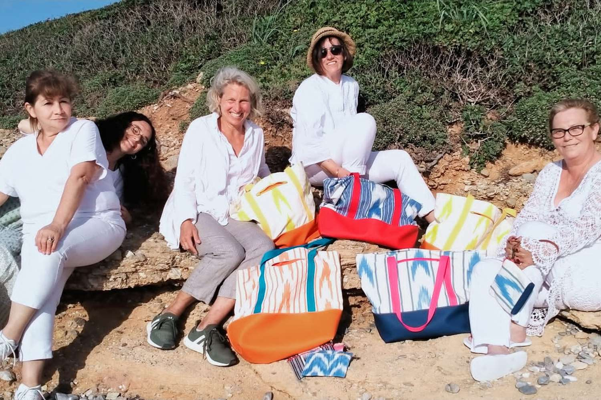
An earlier partnership retained within the foundation's continuing record.
View ProjectUK
Financial education supporting more confident choices and social mobility.
View Project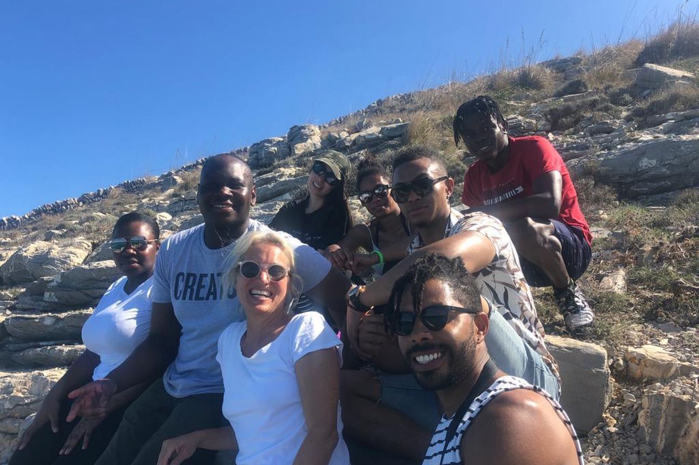
UK
Interest-free support for professional development and stability, with repaid funds supporting future recipients.
View ProjectAt a glance
Get involved
Give to the foundation or begin a conversation about supporting our organisational partnerships.
Support the work